Через многочисленные реки, каналы, озера и пруды Петербурга, в общей сложности, перекинуто более 300 мостов, поэтому познакомиться с мостами «северной Венеции» — все равно, что узнать город. Почти все парадные переправы строили в центре, рядом с главными достопримечательностями. Но не меньше других интересных сооружений можно увидеть, если свернуть с привычных туристических маршрутов.
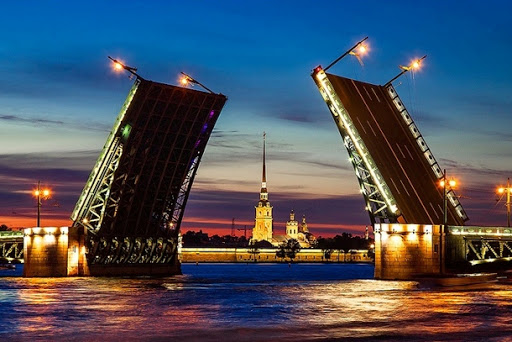
Из всего списка достопримечательностей, которыми буквально напичкан Санкт-Петербург, все же можно выделить несколько наиболее знаковых. Как правило, символами города называют Исаакиевский собор, храм Спаса-на-Крови, Петропавловскую крепость. Но панорама Питера была бы неполной без его знаменитых инженерных сооружений — разводных мостов. Наиболее живописным и, пожалуй, самым фотографируемым считается Дворцовый мост. Наверняка, открытки с разведенными крыльями Дворцового на фоне шпиля Петропавловской крепости есть у каждого гостя Санкт-Петербурга.
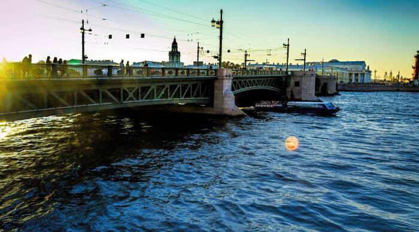
Мост изначально должен был стать самым красивым в городе, но на протяжении всего времени своего существования судьба играла с ним в жестокую игру. И все-таки, практически лишенный архитектурных изысков Дворцовый мост словно магнит притягивает к себе тысячи людей, совершающих прогулку от Эрмитажа до стрелки Васильевского острова.
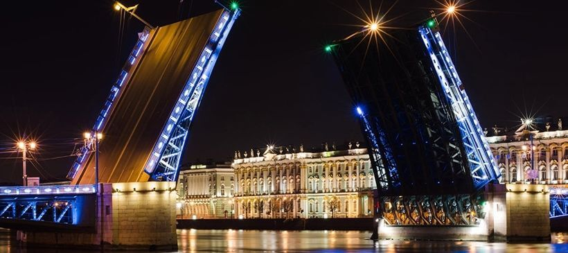
В середине 19 века, вскоре после строительства первого в городе постоянного моста через Неву (Благовещенского), сюда, к Зимнему дворцу переместили понтонный Исаакиевский, который до последнего времени связывал Университетскую набережную и Сенатскую площадь. После небольшого косметического ремонта он получил новое название — Дворцовый, в честь расположенного буквально в двух шагах Зимнего дворца.
В 1917 г. Дворцовый мост большевики переименовали в Республиканский. Но новое название продержалось относительно недолго, и в 1944 г. оно было заменено на старое.
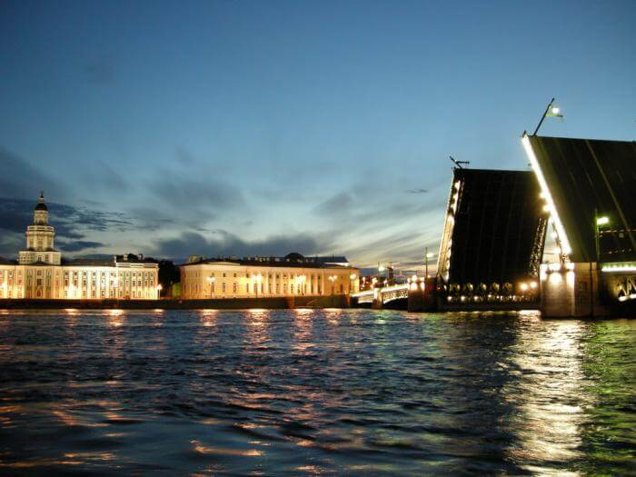
Но разве таким должен быть столичный мост, символизирующий сотрудничество власти — Зимнего дворца и предпринимательства — Биржи? Поэтому уже в 80-е гг. 19 века стала очевидной необходимость создать постоянную переправу, которая связала бы Васильевский остров c Большой землей. Окончательное решение о замене понтонного моста на постоянный было принято в 1900 г. Строительство капитального инженерного сооружения началось в 1912 г. и прервалось в 1914 г. из-за Первой Мировой войны. В итоге движение по мосту открыли в 1916 г., правда, художественное оформление Дворцового так и не было закончено. К этому времени на него установили только временные перила и уложили деревянный настил. Ну а дальше было не до украшений: в Петрограде случилась революция, и у города появились куда более важные дела.
За время своего существования мост неоднократно подвергался реконструкции. В 1998 г. с него демонтировали трамвайные пути, самый свежий капитальный ремонт был проведен совсем недавно: в 2013 г.
Литейный мост - самый мистический мост Санкт-Петербурга. На старинных картах видно, что еще до основания города в районе существующего моста существовала переправа на пути из России в Швецию: на одном берегу заканчивалась Новгородская дорога, на другом начиналась дорога на Выборг.
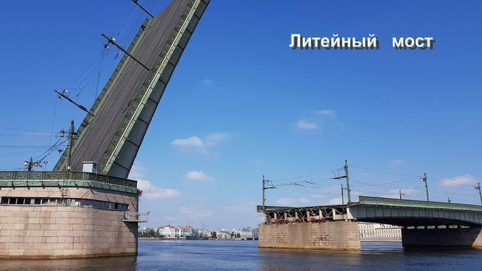
В 1786 году в створе Воскресенского проспекта был построен второй в городе плашкоутный мост, получивший название «Воскресенского». Затем его перенесли к Летнему саду а прежнем месте был построен новый наплавной мост, который наводился вплоть до 1849 года. Постоянный мост, своим появлением обязан трагедии. 4 апреля 1865 года наплавная переправа у Литейного проспекта была снесена бурным ледоходом. Для изучения причин аварии создали специальную экспертную комиссию, но необходимость создания постоянного моста стала очевидной.
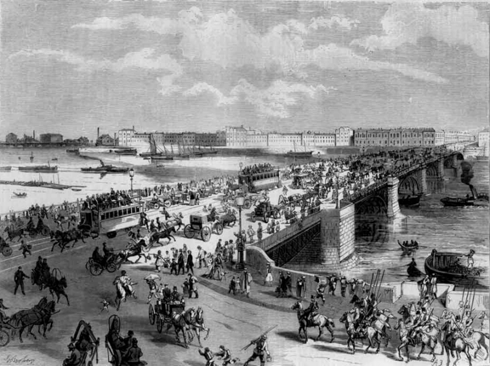
1 октября 1879 года состоялось торжественное открытие моста и награждение лиц, принимавших участие в строительстве. Струве был пожалован чин генерал-майора. Стоимость работ превысила сметную в два раза, и в полтора раза - стоимость работ по отвергнутому проекту "Вестминстер"... обычное для России дело... Мост был разводным, но поворотным! Разводка крыла производилась при помощи ворота, приводимого в действие восемью рабочими. Позже его заменили водяную турбину и проход для судов открывался за 20 минут.
Мост изначально был назван Александровским (в честь императора Александра II). Однако название Александровский не прижилось, и позже он был переименован в Литейный (именно так его со дня основания и называли петербуржцы). Мост проходит над самым глубоким местом Невы (хотя по картам глубин, самое глокое место не здесь) - глубина реки в этих местах достигает 24 метра. Старый мост прослужил 85 лет - с 1879 по 1964 гг. Ныне у моста САМЫЙ ТЯЖЕЛЫЙ В МИРЕ разводной пролёт, массой более 3200 тонн при длине более 50 метров. При разводе он поднимается под углом 67 градусов за две минуты.
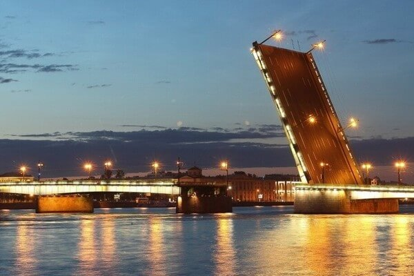
Это место считалось заколдованным, согласно легендам, на дне реки расположен "кровавый" валун, прозванный в народе Древним Атаканом. Историки утверждают, что в глубокой древности этому камню поклонялись и приносили человеческие жертвы племена, обитавшие когда-то в устье Невы. Пленных, захваченных во время войн, убивали и окропляли их кровью этот камень. И тогда пленники стали молиться Неве, просили, чтобы та спасла их от страшной смерти. И пот легенде, река словно услышала их молитвы: она изменила свое русло, и страшный камень, лежавший на берегу, теперь оказался на дне. По другой версии, когда Петр I начал строить новую столицу, камень был сброшен строителями в Неву, в районе Литейного моста. Хотя зачем это надо было делать, когда каждый камень был наперечет не понятно.
Пешеходный Банковский мост, который охраняют потрясающие фигуры таинственных мифических существ грифонов, — один из трех «звериных» Петербургских мостов и редкой красоты место на канале Грибоедова. Отсюда открываются манящие виды на Невский проспект, Храм Спаса на Крови, Дом Зингера, боковой и задний фасады Казанского собора.
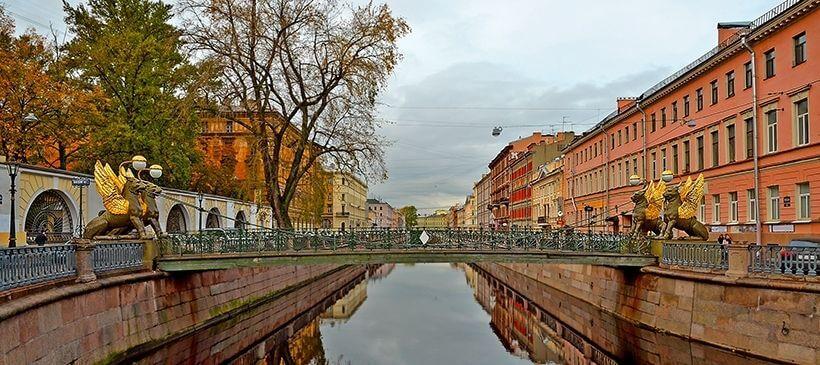
Сказочные львиноголовые звери с золотыми крыльями легко удерживают в хищных зубах массивные цепи, на которых крепится Банковский мостик, отчего вся конструкция кажется ажурно-невесомой, парящей над тихими водами канала.
Банковский мост, соединивший Казанский и Спасский острова Северной столицы, был сооружен по проекту замечательного инженера Вильгельма фон Треттера. Свое «денежное» имя мост получил в честь расположенного рядом финансового учреждения Петербурга — Ассигнационного банка. Этим соседством объясняется и внешний сказочно-мистический облик сооружения. Чугунные «птицезвери» были выбраны для украшения моста не случайно и появились благодаря скульптору Павлу Петровичу Соколову.
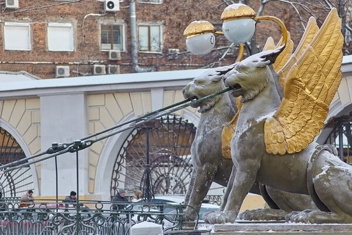
Крылатые львы с древности олицетворяли единство силы и ума, были хранителями путей спасения, сокровищ и тайных знаний, а в христианские времена лев с крыльями стал символом Святого Марка. Но фигуры мифических животных являлись не только украшением переправы через канал, но и маскировкой несущих элементов конструкции моста – металлических цепей. Опорами для круглозвенных мощных цепей стали каркасы, заделанные в фундамент под пьедесталами и задекорированные скульптурами крылатых зверей. Изготовлением металлических деталей и монтажной сборкой конструкции занимался литейно-механический завод Чарльза Берда.
Банковский мост на канале Грибоедова открылся 24 июля 1826 года. Его длина составила более 25 м, ширина - 1,85 метра.
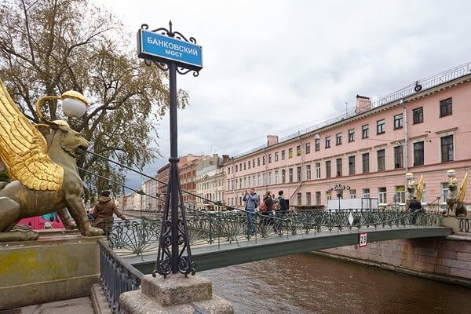
В 1949 г. деревянный настил Банковского моста, который пришел в аварийное состояние, был демонтирован, а прогоны, крестовые связи, поперечины и покрытие капитально отремонтированы. И хотя старинная решетка ограждений в конце XIX века была утрачена, во время реставрационно-восстановительных работ 1952 г. под руководством архитектора Александра Ротача по исходным чертежам были изготовлены точные копии ограждений с оригинальным орнаментом. Над головами крылатых грифонов были восстановлены чугунные фонари-бра с круглыми абажурами.
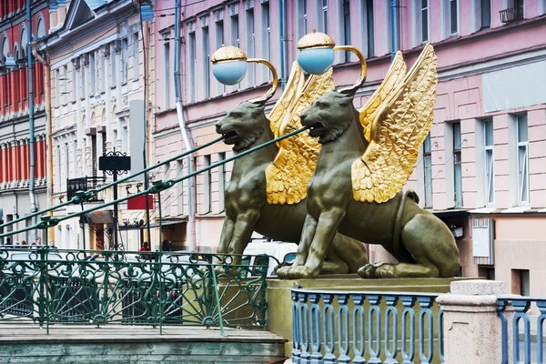
В наши дни грифоны Банковского мостика, как и в давние времена, все так же стоят на страже. Но теперь они охраняют другие «сокровища нации» — таланты и «тайные знания» учащихся Государственного экономико-финансового Университета, который разместился в здании бывшего Ассигнационного банка. Ведь «ума палата дороже злата». В ходе реставрационных работ 2017 г. великолепным крылатым зверям вернули исторический облик. Их тела приобрели цвет темной бронзы, покрытой старой патиной.
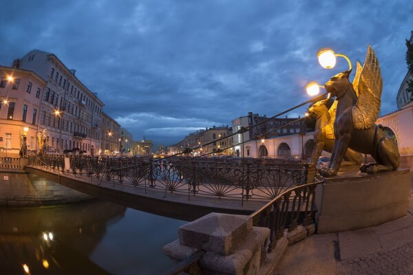
Там, где канал Грибоедова делает резкий поворот, в створе Малой Подьяческой улицы расположен Львиный висячий мостик. Это одно из самых красивых мест Санкт-Петербурга. Чугунные опоры моста скрыты фигурами животных, их пасти соединены между собой цепями.
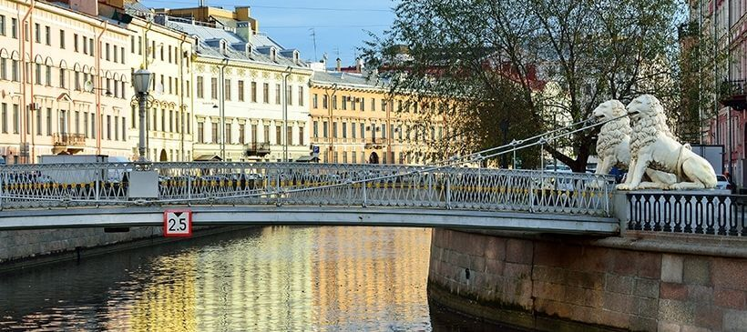
Модели фигур львов создал русский скульптор Павел Соколов, а строительство велось под руководством инженеров-мостостроителей Вильгельма Треттера и Василия Христиановича, участвовавших в сооружении всех висячих мостов Северной столицы.
Инженеры применили оригинальное архитектурное решение — цепи, удерживающие мост, закреплены в скульптурах львов.
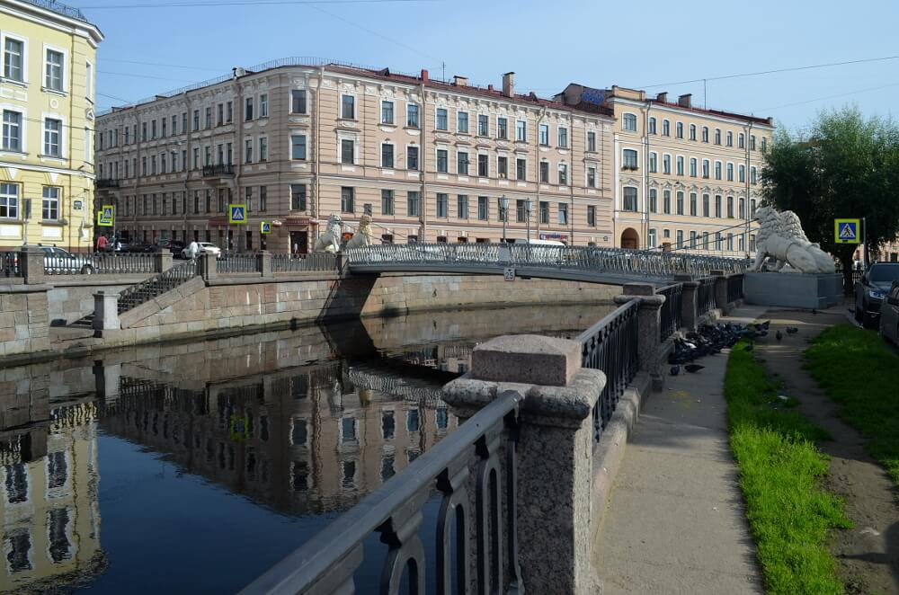
Открытие моста состоялось 1 июля 1826 года и за первые три часа — с 8:00 до 11:00 утра по нему прошло около 2700 человек.
В 1838 году в парке Тиргартен в Берлине был построен мост, ставший уменьшенной копией Львиного моста, но в отличие от петербургского, его перила и пролет до сих пор остаются деревянными.
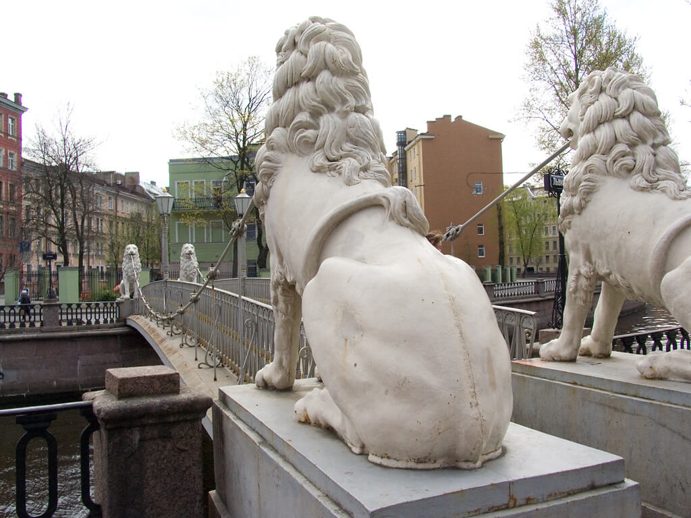
При строительстве Невского проспекта возникла необходимость соорудить переправу через реку Ерик или как раньше называли Фонтанку — Безымянный Ерик. «За Большою Невой на Фантанной реке по першпективе зделать мост», — приказал Петр I и в 1715 году деревянная переправа была сооружена. Назвали ее Аничков мост — по имени инженера-подполковника Михаила Аничкова, чей полк базировался в этом месте и строил эту переправу. Длина ее была более 150 метров и перекрывала всю заболоченную пойму реки.
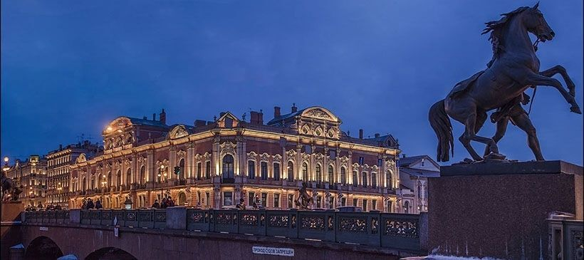
Тогда это была окраина Санкт-Петербурга и здесь находилась пограничная застава, на которой проверяли паспорта и брали плату за въезд в город. Платить можно было и деньгами и булыжниками, которыми мостили дороги. На ночь шлагбаум опускали и караульные укрывались в шалаше, а позже для них построили караульный дом, где они проверяли документы и прятались от непогоды. В 1726 году переправу сделали разводной и открывали ее для прохода судов с высокими мачтами, а чтобы волки не смогли пройти в город, ее открывали и на ночь. В 1749 году по проекту архитектора Семена Волкова был построен новый деревянный мост. По одной из версий его специально укрепили, чтобы провести слонов, подаренных императрице Елизавете Петровне в дар от персидского шаха Ирана. Переправа не имела разводного пролета и была обшита досками, оформленными под гранит.
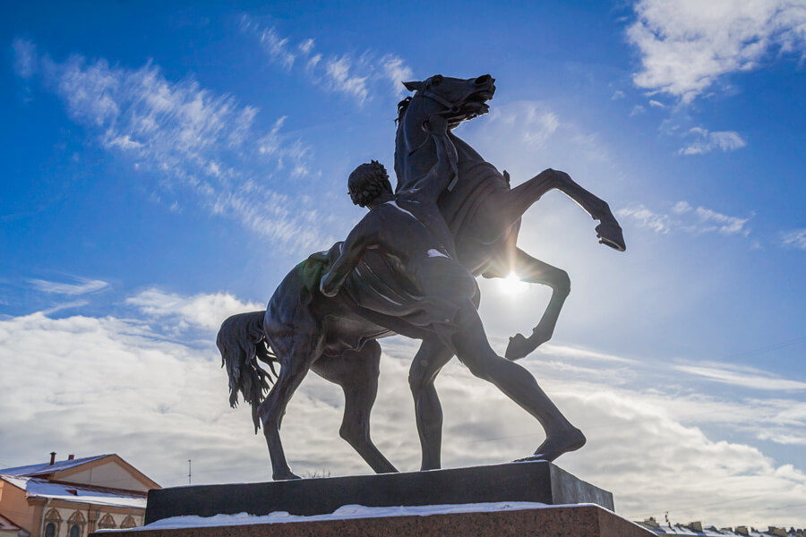
Постепенно Невский проспект расширялся и к 1840-му году его ширина стала значительно шире переправы через Фонтанку, к тому же средняя деревянная часть пришла в негодность. Поэтому в 1841 году Аничков мост был разобран и за семь месяцев по проекту инженеров Ивана Буттаца и Александра Редера была построена новая переправа. Руководил строительством генерал-лейтенант Андрей Данилович Готман. Торжественное открытие Аничкова моста состоялось в январе 1842 года. Башни убрали, а три пролета выложили кирпичом и облицевали гранитом. В это же время появились чугунные решетки с изображением морских коньков и русалочек, выполненные по рисунку немецкого художника Карла Шинкеля. Решетки с таким же рисунком установлены и на Дворцовом мосту в Берлине.
В 1841 году Петербургский скульптор Петр Карлович Клодт работал над композициями скульптур «Конь с идущим юношей» и «Юноша, берущий коня под уздцы», которые должны были установить на набережной Невы напротив Академии художеств. Но после того, как набережную украсили сфинксы, отлитые бронзовые скульптуры поместили с западной стороны Аничкова моста, ближе к Адмиралтейству. А с восточной стороны поместили их временные копии из гипса, которые планировалось заменить на бронзовые фигуры. Петр Клодт отлил скульптуры из бронзы, но прошло почти десять лет, прежде чем композиция была завершена. Коней несколько раз дарили и они украшали то один, то другой дворец.
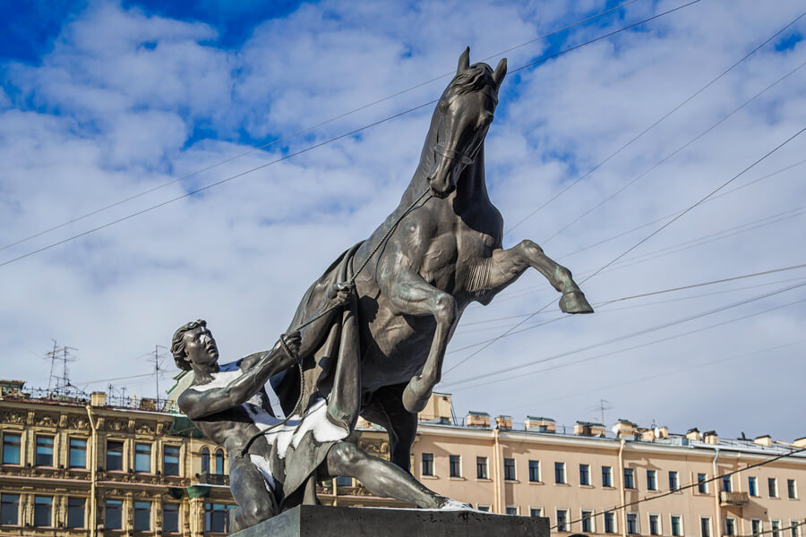
Говорят Клодту изменила жена. Он не смог с этим смириться и нашел мерзавца посягнувшего на его жену. Что было положено делать в те годы? Вызвать на дуэль и убить! Но скульптор оказался тем еще проказником или как теперь говорят троллем 80 уровня, а может банальным трусом. Поэтому взял и просто увековечил этого мерзавца в скульптуре. Точнее, в ее одной части. Да ладно вам, буду еще точнее, в гениталиях одного из четырех коней на Аничковом мосту! Теперь уже точно сложно сказать соответствует ли образ любовнику его жены, потому что существуют версии, что это Наполеон или вообще бывший царь батюшка. Сейчас никто уже не скажет вам точно, а вот тогда в тысяча восемьсот сороковые скульптор доверенному кругу лиц эту тайну посвятил, взяв с них слово, что более никому ни-ни. Думаю эти люди весь XIX век ходили по мосту, загадочно улыбались и глупо хихикали.
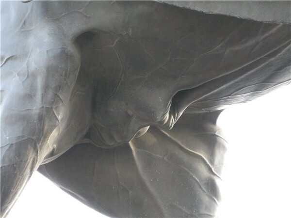
А вот то, что две коняшки не подкованы – это факт, не лишенный символизма. Подкованные стоят лицом к западу – стало быть к войне готовы, а восточные нет – с мирными целями. Хотя существует другая легенда, она историческая и лишь отражает юмористическое настроение горожан. Тогдашние петербуржцы справедливо рассудили, что скульптор так их расставил недаром, ибо "подкованные лошади идут от кузниц на Литейном". Вот такая она реклама XIX века и "джинса" царских времен.
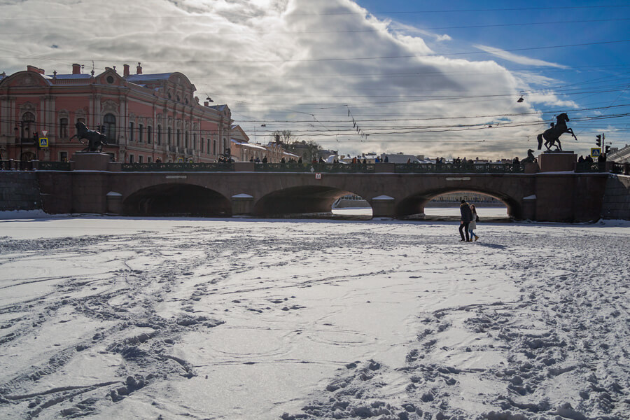
Троицкий мост — второй по протяженности разводной мост Санкт-Петербурга. Его ажурные пролеты соединяют Троицкую площадь и Марсово поле, выступая границей между центральными районами города и Петроградской стороной. Переправа в этом месте известна с давних времен — по ее оси проходит Пулковский меридиан, которым активно пользовались русские картографы до перехода на Гринвич в 20 веке.
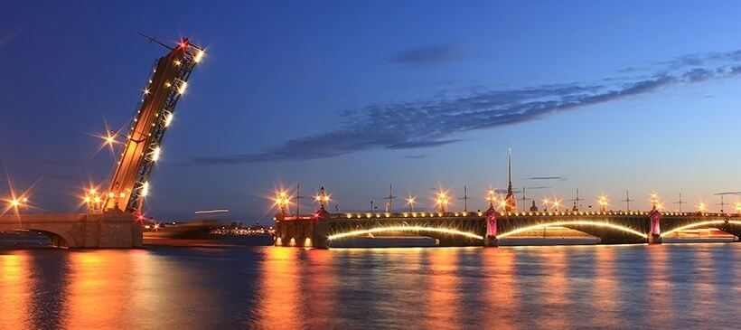
Впервые мост упоминается в 1827 г. — как плашкоутный (на плавучих опорах) мост между Суворовской и Троицкой площадями. В то время это была самая длинная переправа во всем городе. В 1890 г. власти Санкт-Петербурга осознали необходимость реконструкции плавучего моста и объявили конкурс. За первое место и награду в 6000 RUB боролись почти два десятка претендентов из разных стран, и в итоге выиграла фирма Гюстава Эйфеля. Однако вне конкурса рассматривали также идею компании «Батиньоль» — те предлагали оригинальную консольно-арочную систему соединения пролетов, которая изрядно облегчала конструкцию. Мост должен был стать не только изящным и необычным, но также и менее затратным, так что проект утвердили.
По легенде, известный летчик-испытатель Валерий Чкалов пролетел под этим мостом, чтобы добиться сердца своей невесты. Правда это или нет — неизвестно, но на съемках фильма с одноименным названием самолет пролетел под ним аж 6 раз.
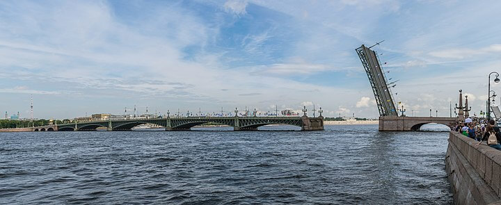
Открытие состоялось в годовщину 200-летия города в 1903 г., и первый развод моста произвел лично император Николай II. На открытии также присутствовал и президент французской республики Феликс Фора — правители символически положили по монете у мостовых опор. Мост несколько раз переименовывали — в октябре 1918 г. он был назван мостом Равенства, в 1934 г. его нарекли Кировским в память об убийстве революционера С. М. Кирова, в том же году сняли все мемориальные доски с именами строителей. Снова называться Троицким он стал лишь 4 октября 1991 г., в перестроечное время.
Длина Троицкого моста 582 м, а ширина достигает 23,5 м — по величине он уступает только мосту Александра Невского. Разводной участок находится ближе к левому берегу Невы и поднимается почти вертикально. Интересен факт, что середину парапета можно указать очень точно — там, где узор решеток меняет наклон.
Также на мосту стоят четыре обелиска с двуглавыми орлами на вершинах и мемориальными табличками с именами инженеров и строителей. Одна из известных особенностей мостового декора — трехрожковые фонари, с внешней стороны перил украшенные символом самодержавия.
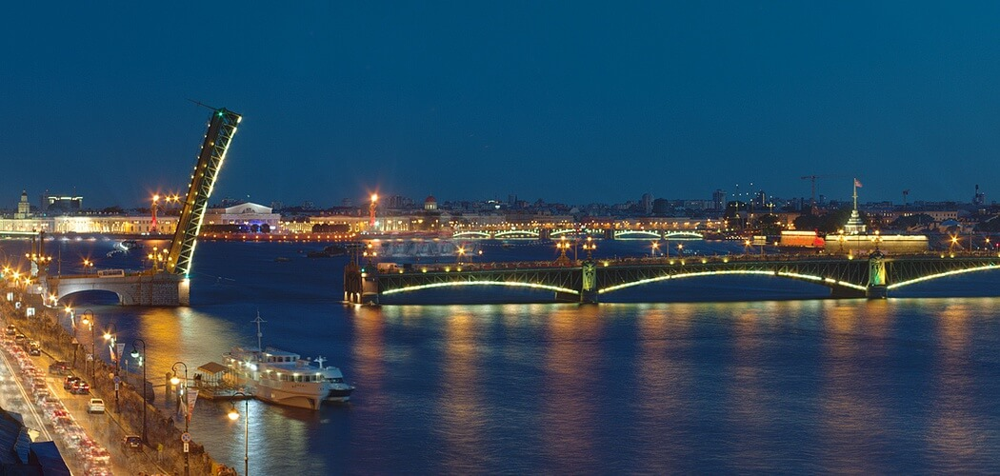
Большеохтинский мост (до 1917 года – мост Императора Петра Великого, с 1917 по 1956 год – Большеохтенский) расположен через реку Неву в створе Якорной улицы (бывш. Комаровского пр.) на правом берегу и по оси «Охтинской прорезки» – на левом берегу. Название «Императора Петра Великого» мост получил при закладке в 1909 году в знаменательную дату 200-летия победы Петра I в Полтавской битве. До постройки мост условно назывался «Охтинским», а после Октябрьской революции – Большеохтенским. Необходимость строительства моста была вызвана присоединением Охтинского пригорода к городу Санкт-Петербургу.
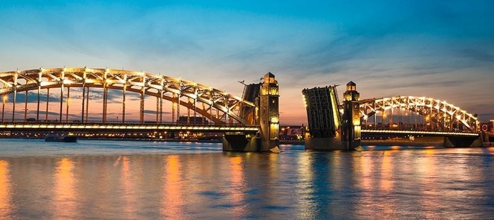
В те времена мост представлял собой 3-х пролётное сооружение с разводным двукрылым пролётом по середине и двумя береговыми пролётами, перекрытыми металлическими арочными фермами с ездой понизу. Он стал первым мостом на реке Неве, который представлял наибольшие удобства для судоходства. При строительстве, чтобы выделить разводной пролёт, на промежуточных опорах с верховой стороны были сооружены башни-маяки высотой 36.0 метров от ординара воды. На верхних площадках башен были установлены большие фонари с зеркальными стёклами для освещения подходов к мосту в ночное время суток для судов. Башни имели ещё одно назначение – необходимость вместить механизмы развода.
Разводное пролётное строение представляло собой двукрылую раскрывающуюся систему с жёстко прикреплёнными противовесами с неподвижной осью вращения. Разводка моста производилась с помощью электромеханического привода. Величина пролёта в свету составляла 42.7 метра. В поперечном сечении было шесть главных балок, связанных между собой поперечными балками и связями.
Единственные кто был против моста - паромщики. Из-за популярности переправы они не стеснялись заламывать высокие цены и обдирать нуждающихся до нитки, не каждый петербуржец мог себе позволить прогулку на таком кораблике. В народе даже появилась шутливая песенка:
"Из-под Смольного на Охту
очень дорог перевоз.
Уж как я свою милую
на ручонках перенес".
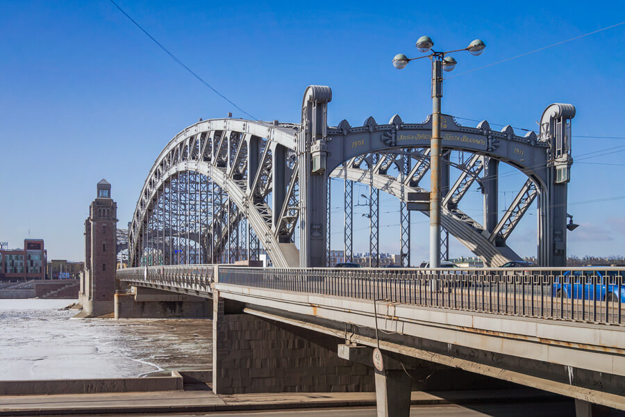
Стройка затягивалась, сроки сдвигались. Мост мог стать очередным долгостроем в истории города, как "Зенит-арена". Ускорила весь процесс трагедия. Произошла она в 1907 году, из-за столкновения со льдиной затонул пароход "Архангельск". Трагедия была размахом поменьше гибели Титаника, состоялась на пять лет раньше и про нее в итоге не снимали кино с Ди Каприо, но в ее результате погибло 39 человек. Произошедшее вызвало большой общественный резонанс, каждый газетчик трубил об этом на весь Петербург. Повезло императору, что Живого Журнала тогда не было, уверен что каждый автор в топе описал бы этот случай, не оставив его в покое. Неудивительно, что в мае этого же года Николай II отдал приказ: "Не затягивать постройку моста!".
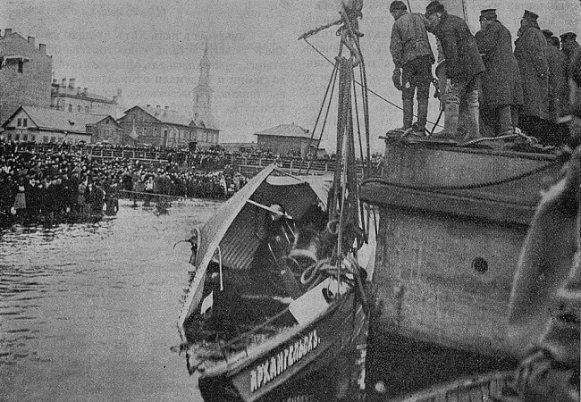
В очертаниях промышленного Петербурга взгляду неопытного путешественника легко было разглядеть Лондон. Неву ему могли выдать за Темзу, а Большеохтинский мост за Тауэрский. Такой схожестью воспользовались режиссер и продюсеры фильма "Приключения Шерлока Холмса и Доктора Ватсона. Сокровища Агры". Ключевые сцены фильма снимались в период "Белых ночей" чем сводили к минимуму риск попадания в кадр ненужных людей и советских машин. Хотя вот один местный житель оказался довольно полезным, он сдал на прокат свой катер. Чтоб тот выглядел соответствующе, к нему приделали металлическую трубу, в ней жгли солому и солярку, имитируя дым парового двигателя.
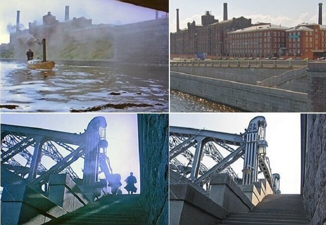
Как и творение Эйфеля, мост изготовлен из металлических конструкций, которые соединили между собой заклепками. Большеохтинский мост в свое время также не пришелся по вкусу горожанам, его называли слишком громоздким и уродливым. Как же они ошибались! Сегодня мост считается одним из самых красивых в Петербурге и мире. Так что, когда активисты в следующий раз выйдут на митинг против строительства очередного шедевра, то можно напомнить эту историю.
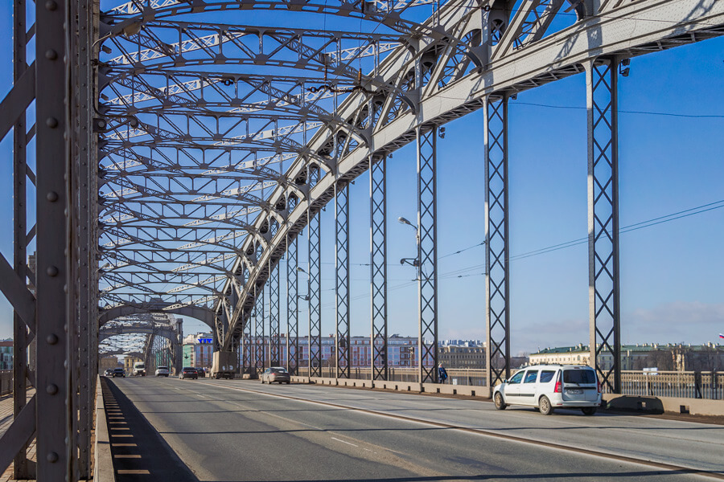
ВВЕРХ